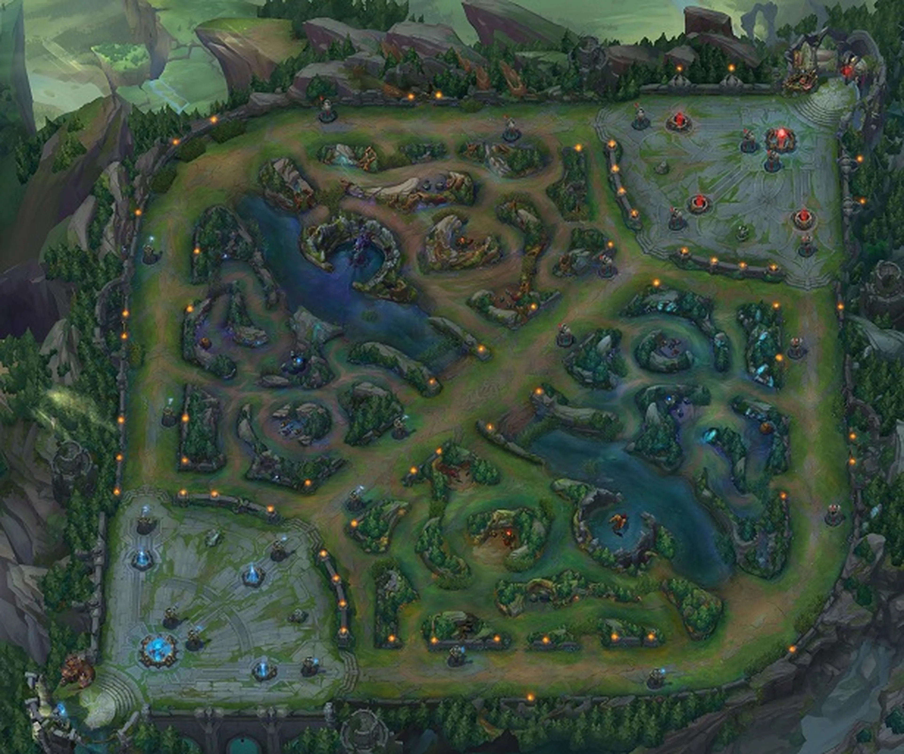
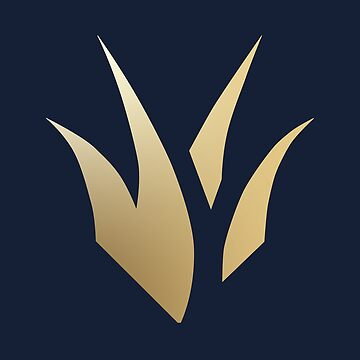
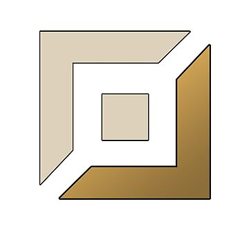

Es un juego de estilo MOBA que deriva del famoso juego DOTA, que a su vez en un mood del juego Warcraft III.
El juego consiste en partidas de 5 jugadores contra 5 jugadores (equipo rojo contra equipo azul) con la finalidad de romper la estructura principal del equipo rival, llamada nexo. Cada jugador elige un campeón para jugar la partida.
Para ello, veremos el como se hace y las posibles maneras de jugar.
El juego consta de un mapa dividido en 3 carriles y las zonas entre los carriles. Comunmente, la línea superior está ocupada por el jugador al que se le llama toplaner. La línea del medio (línea más corta debido al diseño del mapa) se llama midlaner. La línea de abajo donde tiene la peculiaridad de que hay dos jugadores del mismo equipo se llama botlane, donde juega el adc (ADCarry) y el Support. El mapa tiene dos zonas entre las lineas llamada jungla, donde juega el quinto integrante del equipo, llamado Jungler.
| Toplaner | |
 |
| Jungler |  | |
| Midlaner | |
|
| ADC |  | |
| Support | |
Como es mi posición y la más influyente, voy a explicar como funciona la jungla. La jungla tiene funciones muy diferentes ya que su forma de conseguir oro es diferente a los de las líneas, ya que en la jungla no hya minions, solo hay mounstros que aparecen cada 2 minutos y medio. Las funciones del jungla es ayudar a los de las líneas a poder matar, a empujar las waves o a moverse para generar ventajas en los objetivos neutrales. Estes objetvos son competencia del jungla, en los cuales los dos equipos pelearán para ver quien se queda los dragones, las larvas, el heraldo o el baron. Todos estes mounstros dan una ventaja al equipo que logre eliminarlo. Esto hace que en la pelea de estes objetivos se produzca una fught (los 5 jugadores de un equipo contra los otros 5). Poner por delante a tus compañeros es fundamental, ya que esto hace que con esa ventaja pueden incrementar la diferencia de oro y así generar más ventaja. Este efecto es llamado snowball (una pequeña ventaja se puede convertir en una buena ventaja). Aqui dejo una explicación de como conseguir oro y que es y como funcionan los minions.
El lol consta de mas de 170 personajes jugables, todos con habilidades, pasivas y jugabilidad diferente, lo que hace que cada partida sea diferente. Cada cierto tiempo meten personajes nuevos al juego o modifican alguno ya existente para adaptarlo a la jugabilidad actual, haciendo que el juego tenga contenido actualizado semanalmente. Esto es muy importante ya que los campeones pueden ser más fuertes o más débiles que otros por un mal balanceo y hace que los winrates de los personajes caigan o se disparen según como este el campeón en ese momento. Aqui dejo un link para ver a todos los personajes.
A parte del juego, riot (empresa del lol) tiene otros aspectos artísticos que complementan al juego muy bien, como una serie de animación muy conocida o muchas canciones utilizando a los personajes como si fueran los cantantes, interpretados por artistas muy conocidos al nivel de Lilnas o Madison Beer. Esta es una de las canciones más conocidas, hecha por la celebración del mundial del lol de hace ya más de 10 años, canción hecha por Imagine Dragons.
Tambien tienen muchas animaciones con los personajes del juego para anunciar una nueva temporada del juego, donde cambian muchos aspectos del juego, aportando frescura para los jugadores que ya llevan muchos años disfrutando de uno de los juegos más jugados en la última década.